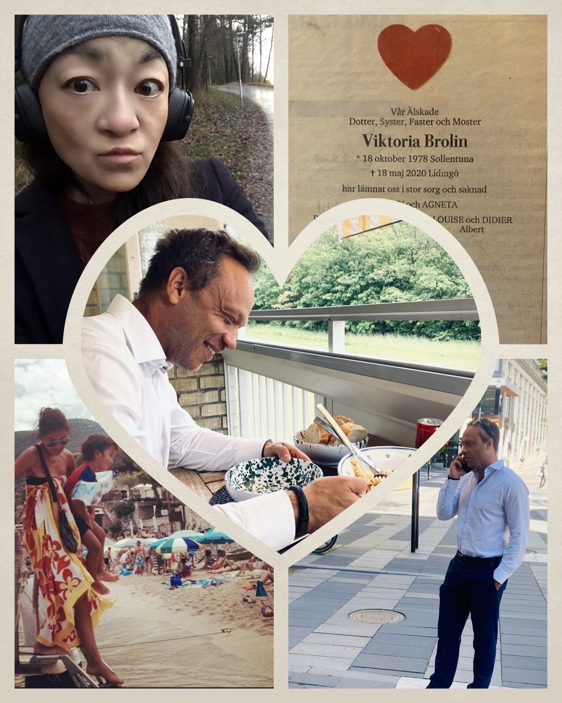

…och det skapade en möjlighet för mig att fortsätta hålla henne levande i huvudet, att hon fortfarande var på behandlingshemmet i Skåne.
Kommer alltid minnas hur vi skrapade ihop våra bidragsslantar, gjorde färsk pasta, delade på en flaska vin och pratade om den där picknicken vi skulle ha i Hagaparken "när hon mådde lite bättre". Jag har aldrig hunnit sörja, utrymmet har aldrig existerat – och då för allt som varit. När jag tänker tillbaka så även som litet barn. Genomgått komplicerade, smärtsamma operationer, haft både tumör i ena bröstet som 14-åring och nästan blivit blind på ena ögat vid 23.
Alltid bitit ihop, genomfört, aldrig klagat, aldrig låtit smärta eller sorg ta plats för risken att gå sönder, tar det sen-tänket, samt behöva möta en oförstående omgivning där det lätta var att se till hur tuff och stark jag var. Många gånger trott att det kan omöjligt bli värre – då visste jag inte att det värsta som skulle komma att ske var den människan som fick mig att komma ihåg hur det är att skratta när allt jag ville var att dö.
Priset för det har tagit helt orimliga proportioner och förmodligen något jag kommer få leva med så länge jag lever. Någon gav det mig ”min livlina”, en som som jag älskar mest i hela denna värld, ett livets ansvar som på många sätt är min räddning.
Att befinna sig i överlevnad satte sig stenhårt på sömnen, att det farliga ligger i att slappna av så därför gör kroppen hur mycket jag än försökt.
Så en dag kom du, du förändrade allt för mig enbart genom att vara just du. Allt jag bär suddar ner mitt omfång, dina vackra små sår, din blick, ditt sätt att resonifiera, det jag hela mitt liv saknat finns i dig. Och att jag inte längre har en kropp sig för att separera från, utan allt som rinner nerför mina kinder och göms i dig. En verklighet där jag var tillräcklig, där jag dog så jag fick stanna där för evigt. Önskar en verklighet där jag var tillräcklig, där jag dög så jag fick stanna där för alltid.